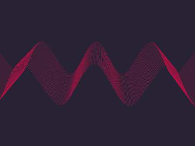

Signal Processing
is an electrical engineering subfield that focuses on analyzing
modifying and synthesizing signals such as sound, images, and scientific measurements.

is an electrical engineering subfield that focuses on analyzing
modifying and synthesizing signals such as sound, images, and scientific measurements.
sampling is the reduction of a continuous-time signal to a discrete-time signal.
the determination of an original continuous signal from a sequence of equally spaced samples.